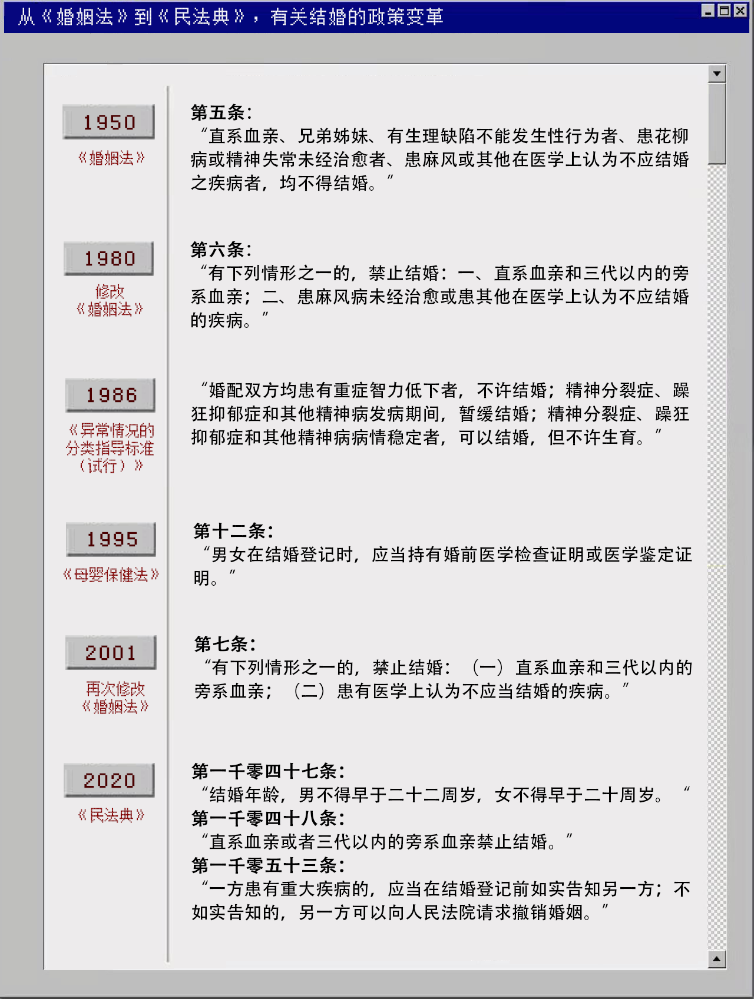
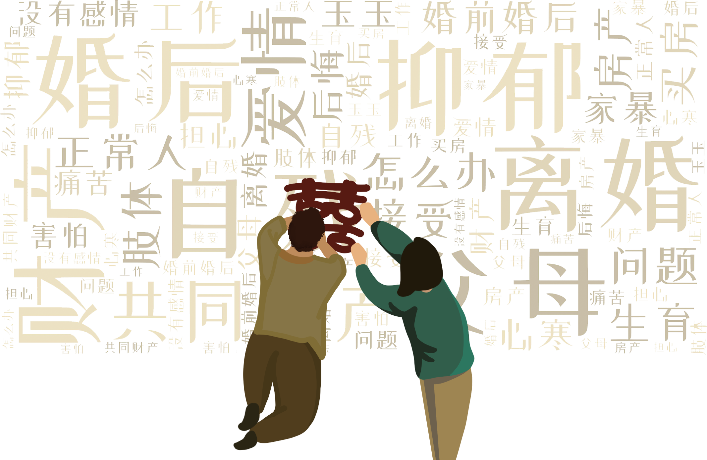

相 遇 之 路
线上交友和线下相亲，对于普通人来说，似乎只是寻找爱情的备选项。
但是这两种渠道，却是残疾人与恋人相遇的主要方式。
1.线下相亲是否碰壁
各省、自治区、直辖市的残疾人联合会，
致力于维护残疾人在政治、经济、文化、社会等方面平等的公民权利。
这些经国务院批准和国家法律确认的残疾人自身代表性组织，会为残疾人的相恋之路提供怎样的帮助呢？
我们在除港澳台地区外的各省、自治区、直辖市的残疾人联合会官网，以“相亲”为关键词进行检索，
统计了各地有关举办残疾人相亲活动的132条具体信息。
（下图不同颜色表示各地报道过的、举办相亲活动数量的多少，请点击查看）
各地残联所报道的相亲活动数量
[ 数据来源：各省、自治区、直辖市的残疾人联合会官网 ]
然而，即使是通过这些残联官网，我们能了解到的，往往也只有只言片语。
132份报道中，只有19份完整提及参与人数和成功人数。
而这19份报道所呈现出的相亲活动成功率，也并不可观。
19份报道中的相亲参与人数以及牵手成功人数
[ 数据来源：各省、自治区、直辖市的残疾人联合会官网 ]
此外，有3个网站无法检索，6个网站没有相关信息。
在能检索到的信息里，也有许多举办过的活动未被报道，被报道过的活动也不都具有详细的介绍。
以上数据显示，信息量少、举办数量少、举办频率不高、
成功率低、各地区差异大，是线下相亲活动的主要特点。
2.婚恋网站是何图景
分别创建于2007、2009、2010年的“兰草之恋”、“等你网”、“必壹爱”,
其首页分别展示有36984、20000、1254名用户，代表着残疾人版本的网络婚恋社区。
我们爬取了这些用户对外展示的相关信息，以代表使用这些网络平台寻找爱人的用户画像。
结果如下图所示。
（点击网页关键词，查看残疾人婚恋网站相关信息分布）
3.微信公众号行至何处
微信公众号也为残疾人相恋提供了一定的渠道
我们在除港澳台地区外的各省、自治区、直辖市的残疾人联合会微信公众号里，
以“相亲”作为关键词进行搜索，
统计了76篇相关文章，并将他们的年平均阅读量结合地域进行呈现。
各地域残联微信公众号“相亲”相关文章年平均阅读量
[ 数据来源：各省、自治区、直辖市的残疾人联合会微信公众号 ]
此外，以“残疾人婚恋”“残疾人征婚”等为关键词搜索，经筛选得到18个相关公众号。
18，这个数字显然与残疾人庞大的婚恋市场并不匹配。
通过统计这18个公众号的账号主体，发现由个人创办的公众号占比超半数，而无一由社会机构创办。
（点击下方公众号头像，查看公众号名称、主体及简介）
残疾人红娘
杭州天剑信息管理咨询有限公司
中国残疾人红娘网是服务残疾人征婚、交友的专业网站，免费提供残疾人征婚，无性婚姻，形式婚姻等特殊人群征婚相亲交友服务平台，是残疾人朋友认识、交流、交往的网上红娘和情感家园。
残疾人征婚等你网
原平市美帅科技有限公司
【等你网服务号】残疾人征婚交友服务：【招对象】【找工作】【找红娘】，帮助残疾人【寻找幸福】。等你网——中国最大的残疾人征婚·交友网站：20万会员，40个QQ群，残疾人相识、恋爱、结婚，而且有了宝宝！www.dengni.org
久久残健鹊桥
个人
残疾人和健全人婚介、相亲交友服务平台，希望能找到那个共度一生的Ta!
红尘叙
深圳市识梦科技有限公司
用社交的方式为残障人士搭建一座融入社会的桥梁
言爱网残疾人征婚相亲
个人
中国最专业的残疾人征婚·交友·公益网站：言爱网：www.yanai.com 宗旨:帮助残疾人朋友能够找到真心相伴一生的知心爱人!
残疾人征婚相亲交朋友网
重庆智多宝商务服务有限公司
残疾人婚恋，残疾人征婚，残疾人交友，残疾人征婚交友，残疾人相亲，残疾人征婚相亲交友，智多帮婚恋—残疾人征婚相亲交友网，完全免费的残疾人征婚相亲交友平台
残之家残疾人信息平台
个人
残之家免费为您提供残疾人政策信息、残友原创、残疾人征婚、残疾人就业等相关内容。
残疾人联盟
个人
我们是由残疾人自己组成的队伍，去帮助那些自卑处在迷茫的残疾人朋友。用我们切身的感受让朋友们乐观自信的生活。
必壹爱
杭州云外云智能科技有限责任公司
每年都有成千上万的来自全国各地的人在必壹爱（www.biyiai.com）找到另一个残疾人伴侣。必壹爱是头号残疾人征婚交友服务，并为那些男士带来希望和在线结识年轻漂亮的女士提供了一个交流的平台
残疾人就业征婚服务
个人
残疾人就业创业征婚交友免费平台
残障人之家
个人
打造五心（暖心、贴心、耐心、恒心、爱心）一流的残疾人就业服务咨询、就业培训、残疾人交友的公众平台，为残障人创造一个共同的家园。
安徽残疾人互助论坛
个人
传递正能量；倡导无障碍；宣传涉残政策；宣扬助残风尚；普及防残意识；分享自强故事。
残疾人征婚相亲
个人
残疾人征婚相亲交友找对象、100%实名制审核、残疾人求职招聘找工作、残疾人新闻资讯、残疾人福利宣传
残疾人征婚
企业（黄山市屯溪区江龙盲人按摩馆）
残疾人关注，残疾人有缘相聚、相识平台。
等你网残疾人征婚
个人
中国最大的残疾人征婚网站，26万会员，数十个相亲群，许许多多残疾人相识、相恋，成功喜结良缘。www.dnw520.com
残疾人居家就业服务
个人
主要服务残疾人居家就业求职招聘征婚交友。客服电话18607162789
残疾人征婚就业免费平台
个人
该公众号建立目的旨在构建残疾人征婚、寻找工作的信息公布平台，帮助残疾人实现自立根生与结束单身生活的美好愿望，在该过程中公众平台管理者不收取任何费用。由于管理者也是残疾人，没有能力与可行性条件去核实信息内容的真实性，真假自辩
再来残障互助
南昌再来科技有限公司
为广大残疾人同胞提供交流的空间，同时提供交友、就业、培训等服务，并为伙伴们提供了各类辅具，是目前最全面，最活跃的残疾人社区，中华残疾人网，你的价值无可替代！
[ 数据来源：相关微信公众号 ]
毫无疑问，“如何遇见另一半”，
是长期在婚恋市场上被边缘化的残疾人群体一个亟待得到的回答。

婚 姻 殿 堂
与恋爱是个人的寻寻觅觅不同，婚姻拥有更多宏观层面的事务。
对于残疾人，有没有条文规定他们步入婚姻殿堂的门槛？他们步入婚姻的方式又会不会有什么不同？
1.能否结婚
通过在国家法律法规数据库中的检索，我们发现，
从《婚姻法》到《民法典》，法律在“什么样的人能结婚”的问题上态度发生明显变化。
[ 数据来源：国家法律法规数据库 ]
2.如何结婚
在残疾人如何登记结婚方面，各省市的关注程度不同，
唯有安徽省和天津市为残疾人结婚登记程序设置有明文规范。
[ 点击可跳转相应法规 ]
· 《婚姻登记工作规范》第四章第三十六条
· 《安徽省婚姻登记工作规范》第三十条
· 《天津市婚姻登记工作规范》第三十一条
生活中，聋哑人士常常无法直接表达自己的观点。
在更多地方,他们该“如何结婚”依然是一块迷雾笼罩的区域。
（点击下方标题，可跳转至相关报道）
这些案例，有失败也有成功；但可以肯定的是，相关政策仍任重道远。
况且在被报道的案例之外,
一定还存在着更多还没经历、难以经历程序的“婚姻”。
3.婚后境况
对于残疾人来说，得到名正言顺的婚姻，似乎更像是一场需要披荆斩棘的战斗。
那么，走过漫漫相识路、领得结婚证件后，婚姻殿堂里的真正境况又如何？
在知乎和百度贴吧的相关话题里，这个问题得到了冰山一角的回答。
[ 数据来源：知乎相关话题、百度贴吧 ]
我们也希望，未来通过更多的关注，这个回答下能出现更多的幸福感。
回 到 独 身
根据全国第二次全国残疾人抽样调查数据，我国成年残疾人在婚率为61.04%，低于健全人在婚率74.45%。
学者陈涛在《残疾人婚姻家庭研究和发展的现状分析》中指出,
我国残疾人的离婚比例远超过健全人，而2006年的残疾人有配偶比例比1987年还略有下降。
残疾人与非残疾人的婚姻状况
[ 数据来源：陈涛.残疾人婚姻家庭研究和发展的现状分析[J].人口与发展,2008(04):73-82. ]
相恋不易，维系婚姻也艰难。
在几乎走至婚姻穷途之时，他们经历过什么，又面临着什么？
为了回答这个问题，我们在裁判文书网上设置了
“全文：残疾人”、“案由：离婚纠纷”、“文书类型：判决书”的条件,
选择近三年（2019.9.1-2022.9.1）的172篇文书为分析对象,共获得有效文书119篇。
我们分析了每篇文书的基本信息以及原、被告身体情况，离婚具体案由和判决结果。
为什么登上法院？
残疾人离婚案件具体案由
[ 数据来源：裁判文书网 ]
登上法院的他们状况如何，最终又走向何处？
双方身体状况及案件判决结果
[ 数据来源：裁判文书网 ]
但是，婚姻的结束并不代表爱情的终止；
也许未来，荆棘里的向往之花也能迎来绽放。
在“残疾人网”里，《阿甘正传》是首页推荐的励志电影之一。
电影中，阿甘身患残疾，他的母亲却对他说：
You are no different than anybody else is.
你和别人没有什么不同。
我们相信,
“没有什么不同”,关于爱情,

也远远不止爱情。
数据来源
[1]《第二次全国残疾人抽样调查主要数据公报（第二号）》
[2]百度贴吧“残疾吧”
[3]知乎话题“残疾人找伴侣有多难”
[4]必壹爱、等你网、兰草之恋等残疾人征婚网站
[5]中国政府网
[6]安徽省民政厅
[7]天津市民政局
[8]中国裁判文书网
[9]国家法律法规数据库
[10]各省、自治区、直辖市的残疾人联合会官网及微信公众号
[11]与“残疾人婚恋”相关的微信公众号
[12]陈涛.残疾人婚姻家庭研究和发展的现状分析[J].人口与发展,2008(04):73-82.”
，作者（按姓氏首字母排序）
韩雨轩 李佳益 马瑞雯 苗艺涵 王宇轩
指导老师
骆世查